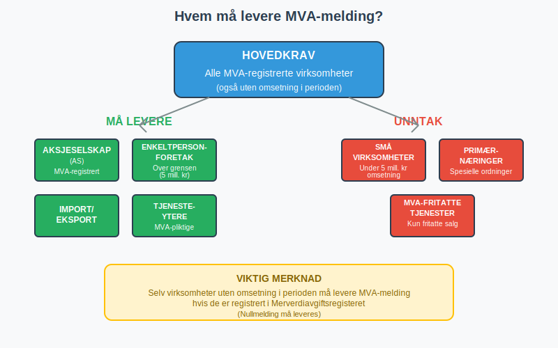
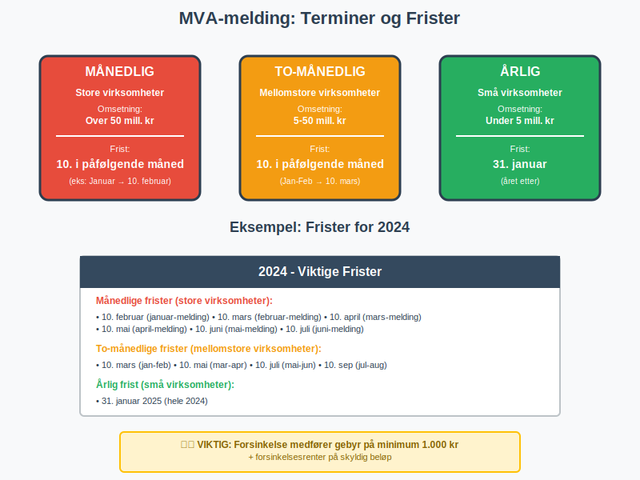
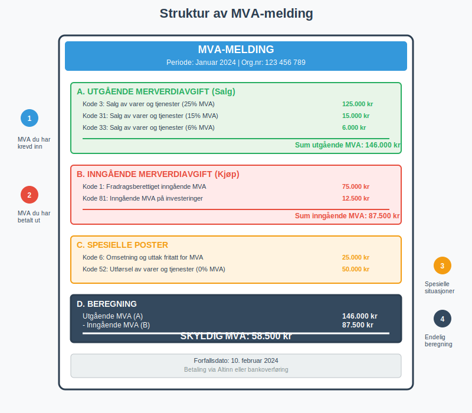
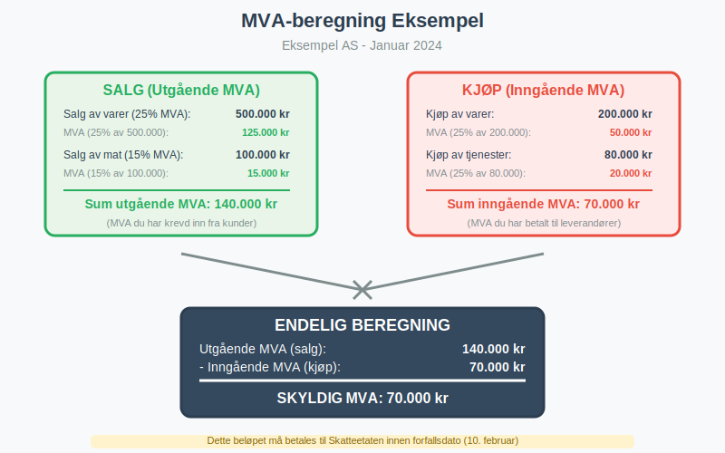
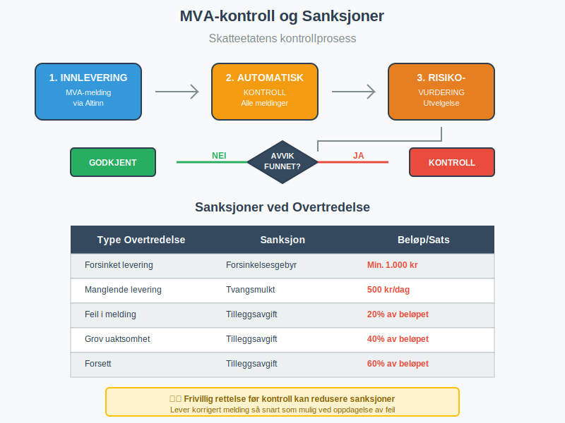
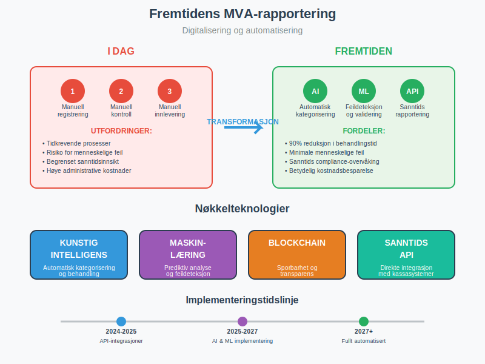

MVA-melding er den obligatoriske rapporten som MVA-registrerte virksomheter må levere til Skatteetaten for å rapportere inn- og utgående merverdiavgift. Denne meldingen er grunnlaget for beregning av hvor mye MVA bedriften skylder staten eller har til gode, og er en sentral del av det norske skattesystemet. Som en viktig komponent i opplysningsplikten, representerer MVA-meldingen bedrifters lovpålagte ansvar for å rapportere avgiftsinformasjon til myndighetene. MVA-meldingen leveres elektronisk gjennom Altinn og er tett integrert med bedriftens regnskapssystem.
Seksjon 1: Hvem Må Levere MVA-melding?
Alle virksomheter som er registrert i Merverdiavgiftsregisteret har plikt til å levere MVA-melding, uavhengig av om de har hatt omsetning i perioden eller ikke. Dette gjelder både aktive og passive MVA-registrerte virksomheter.

1.1 Virksomheter med Leveringsplikt
- Alle MVA-registrerte virksomheter - også de uten omsetning i perioden
- Aksjeselskaper og andre selskapsformer
- Enkeltpersonforetak over omsetningsgrensen
- Importører og eksportører
- Tjenesteytere med MVA-pliktige tjenester, inkludert fjernleverbare tjenester
1.2 Unntak fra Leveringsplikt
Enkelte virksomheter kan være fritatt fra MVA-melding:
- Små virksomheter under omsetningsgrensen (5 millioner kr)
- Primærnæringer med spesielle ordninger
- Virksomheter som kun selger MVA-fritatte varer/tjenester
Seksjon 2: Terminer og Frister
MVA-meldingen leveres på ulike terminer avhengig av virksomhetens størrelse og type. Fristene er absolutte og forsinkelse medfører gebyr og renter.

2.1 Terminoversikt
| Termin | Virksomhetstype | Omsetningsgrense | Leveringsfrist |
|---|---|---|---|
| Månedlig | Store virksomheter | Over 50 mill. kr | 10. i påfølgende måned |
| To-månedlig | Mellomstore virksomheter | 5-50 mill. kr | 10. i påfølgende måned |
| Årlig | Små virksomheter | Under 5 mill. kr | 31. januar året etter |
2.2 Spesielle Frister
- Siste leveringsfrist i året: 31. januar
- Helligdager: Fristen flyttes til neste virkedag
- Oppstart/nedleggelse: Spesielle regler gjelder
- Konkurs: Særskilte frister og prosedyrer
Viktig: Manglende levering innen fristen utløser automatisk forsinkelsesgebyr på minimum 1.000 kr, samt forsinkelsesrenter på det skyldige beløpet.
Seksjon 3: Innhold og Utfylling av MVA-melding
MVA-meldingen består av flere seksjoner som må fylles ut korrekt basert på virksomhetens transaksjoner i perioden. Korrekt kontering i regnskapet er avgjørende for riktig utfylling.

3.1 Hovedseksjoner i MVA-meldingen
A. Utgående Merverdiavgift (Salg)
Dette er MVA som virksomheten har krevd inn fra kunder:
- Kode 3: Salg av varer og tjenester (25% MVA)
- Kode 31: Salg av varer og tjenester (15% MVA)
- Kode 32: Salg av varer og tjenester (11,11% MVA)
- Kode 33: Salg av varer og tjenester (6% MVA)
B. Inngående Merverdiavgift (Kjøp)
Dette er MVA som virksomheten har betalt til leverandører:
- Kode 1: Fradragsberettiget inngående MVA
- Kode 81: Inngående MVA på investeringer
- Kode 83: Inngående MVA på driftsmidler
C. Spesielle Poster
- Kode 6: Omsetning og uttak fritatt for MVA
- Kode 52: Utførsel av varer og tjenester (0% MVA)
- Kode 81: Kjøp av tjenester fra utlandet (25% MVA) - omvendt avgiftsplikt
- Kode 82: Kjøp av tjenester fra utlandet (15% MVA) - omvendt avgiftsplikt
- Kode 83: Kjøp av tjenester fra utlandet (12% MVA) - omvendt avgiftsplikt
- Kode 86: Tap på krav
3.2 Beregning av Skyldig/Tilgodehavende MVA
Formelen for beregning er enkel:
Skyldig MVA = Utgående MVA - Inngående MVA
- Positivt resultat: Virksomheten skylder penger til staten
- Negativt resultat: Virksomheten har tilgodehavende fra staten

Seksjon 4: Levering Gjennom Altinn
MVA-meldingen leveres utelukkende elektronisk gjennom Altinn. Dette krever riktige tilganger og fullmakter.
4.1 Nødvendige Tilganger
- Altinn-bruker med riktige rettigheter
- Virksomhetssertifikat for automatisk innlevering
- Regnskapsfører-tilgang hvis ekstern regnskapsfører leverer
4.2 Leveringsprosess
- Logg inn på Altinn med virksomhetens brukertilgang
- Velg “MVA-melding” fra tjenesteoversikten
- Fyll ut meldingen basert på regnskapsdata
- Kontroller alle tall og beregninger
- Send inn meldingen elektronisk
- Motta kvittering for mottatt melding
4.3 Automatisk Innlevering
Moderne regnskapssystemer kan integreres med Altinn for automatisk innlevering:
- API-integrasjon mellom regnskapssystem og Altinn
- Automatisk generering av MVA-melding fra regnskapsdata
- Redusert risiko for feil og forsinkelser
- Tidsbesparelse for regnskapsavdelingen
Seksjon 5: Kontroll og Etterlevelse
Skatteetaten utfører systematisk kontroll av MVA-meldinger og kan iverksette tiltak ved avvik eller feil.

5.1 Skatteetatens Kontrollaktiviteter
- Automatisk kontroll av alle innleverte meldinger
- Kryssjekk mot andre rapporter og registre
- Stikkprøvekontroller av utvalgte virksomheter
- Revisjon av virksomheter med høy risiko
5.2 Sanksjoner ved Feil eller Forsinkelse
| Type Overtredelse | Sanksjon | Beløp/Sats |
|---|---|---|
| Forsinket levering | Forsinkelsesgebyr | Min. 1.000 kr |
| Manglende levering | Tvangsmulkt | 500 kr per dag |
| Feil i melding | Tilleggsavgift | 20% av beløpet |
| Grov uaktsomhet | Tilleggsavgift | 40% av beløpet |
| Forsett | Tilleggsavgift | 60% av beløpet |
5.3 Rettelse av Feil
Hvis det oppdages feil i en innlevert MVA-melding:
- Frivillig rettelse: Lever korrigert melding så snart som mulig
- Reduserte sanksjoner: Ved frivillig rettelse før kontroll
- Dokumentasjon: Behold dokumentasjon som viser årsak til feilen
Seksjon 6: Praktiske Tips og Beste Praksis
For å sikre korrekt og rettidig levering av MVA-melding, bør virksomheter følge etablerte rutiner og beste praksis.
6.1 Månedlige Rutiner
- Månedlig avstemming av MVA-konti i regnskapet
- Kontroll av alle fakturaer og bilag
- Gjennomgang av spesielle transaksjoner og MVA-behandling
- Forberedelse av underlag for MVA-melding
6.2 Kvalitetssikring
- Dobbel kontroll av alle tall før innlevering
- Sammenligning med tidligere perioder for å identifisere avvik
- Dokumentasjon av alle vurderinger og beslutninger
- Arkivering av alle relevante dokumenter
6.3 Tekniske Løsninger
Moderne virksomheter bør vurdere:
- Integrerte regnskapssystemer med MVA-funksjonalitet
- Automatisk bilagsregistrering og kontering
- API-integrasjon med Altinn for sømløs innlevering
- Varslingssystemer for frister og deadlines
Seksjon 7: Spesielle Situasjoner
Enkelte virksomheter og transaksjoner krever spesiell behandling i MVA-meldingen.
7.1 Import og Eksport
- Importavgift: Betales ved innførsel, kan trekkes fra som inngående MVA
- Eksport: 0% MVA-sats, men må rapporteres i meldingen
- EU-handel: Spesielle regler for handel innen EU/EØS
7.2 Bygg og Anlegg
- Omvendt avgiftsplikt: Kjøper beregner og betaler MVA
- Spesielle koder i MVA-meldingen
- Dokumentasjonskrav for riktig behandling
7.3 Finansielle Tjenester
- MVA-fritatte tjenester: Banker, forsikring, verdipapirhandel
- Delvis fradragsrett: Blandet virksomhet med både fritatte og avgiftspliktige tjenester
- Spesielle beregningsregler for fradrag
Seksjon 8: Digitalisering og Fremtiden
MVA-rapporteringen blir stadig mer digitalisert og automatisert, noe som påvirker hvordan virksomheter håndterer sine MVA-forpliktelser.

8.1 Nye Teknologier
- Kunstig intelligens for automatisk kategorisering av transaksjoner
- Maskinlæring for å identifisere potensielle feil
- Sanntidsrapportering direkte fra kassasystemer
- Blockchain for sporbarhet og transparens
8.2 Regulatoriske Endringer
- Økt digitalisering av alle skatteprosesser
- Strengere krav til dokumentasjon og sporbarhet
- Harmonisering med EU-direktiver
- Nye rapporteringsformater og standarder
8.3 Konsekvenser for Virksomheter
- Investeringer i moderne regnskapssystemer
- Opplæring av personale i nye prosedyrer
- Økt fokus på datakvalitet og -integritet
- Tettere samarbeid med regnskapsførere og revisorer
MVA-meldingen er en kritisk komponent i norsk skatteadministrasjon og krever nøyaktig håndtering fra alle MVA-registrerte virksomheter. Ved å følge etablerte rutiner, investere i riktige teknologiske løsninger og holde seg oppdatert på regelverksendringer, kan virksomheter sikre korrekt og rettidig rapportering av merverdiavgift.
For virksomheter som sliter med MVA-rapportering, kan det være lurt å vurdere profesjonell hjelp fra autoriserte regnskapsførere som har spesialkompetanse på området.